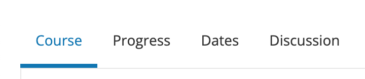

11.3. Managing the Pages in Your Course#
This topic describes the applications and resources that your course experience has enabled outside of the core content experience and how you can modify these tools to fit your course needs.
11.3.1. Working with the Default Pages#
By default, every new course has the following key areas enabled:
Course
Progress
Date
Discussion
In the learner experience, these will be shown in the primary navigation bar at the top of every page, consistently in this order for all courses.
As a course team member with the Staff or Admin role, you also see the Instructor option in the navigation bar, shown at the end of the list of pages. Learners do not see the Instructor option.
Note
The progress page can be disabled and thus hidden from the learner experience, though this is not commonly done and is not recommended. The information on the Progress page is critical for motivating learners, particularly in courses that include graded subsections, but also for courses that include only ungraded exercises. Before choosing to hide the Progress page for your course, consider the possible effect on learner engagement.
11.3.2. Enabling Additional Applications & Resources#
Additional applications and resources can be enabled depending on your course needs, including:
Notes
Teams
Wiki
Calculator
Textbooks
Custom Pages
11.3.2.1. Enabling the Notes Application#
The notes application can be optionally enabled to allow learners to easily create organized text notes for any text, problem, or video transcript content within a course. These notes are then centrally stored for review in the Notes area of the course
To disable or enable the Notes application, follow these steps.
In Studio, from the Content menu select Pages & Resources.
Click the gear icon on the Notes card shown on this page.
From the Configure notes modal, select the toggle to enable or disable the notes application.
Select Apply to save your configuration changes.
11.3.2.2. Enabling the Teams Application#
When you create a course, the teams application can be optionally enabled to provide a mechanism for instructor and learner-driven team formation or assignment.
To disable or enable the Teams application, follow these steps.
In Studio, from the Content menu select Pages & Resources.
Click the gear icon on the Teams card shown on this page.
From the Configure teams modal, select the toggle to enable or disable the teams application.
Select Apply to save your configuration changes.
Additional configuration for the Teams application can be found at 11.3.3.3 Configuring the Teams application
11.3.2.3. Enabling the Wiki Application#
When you create a course, a wiki can be optionally enabled to create and share resources that can be edited and updated by any course team member or learner.
To disable or enable the Wiki application, follow these steps.
In Studio, from the Content menu select Pages & Resources.
Click the gear icon on the Wiki card shown on this page.
From the Configure Wiki modal, select the toggle to enable or disable the wiki.
Select Apply to save your configuration changes.
When you disable the wiki application in your course, any existing articles remain in the edX- wide wiki, but the Wiki page is removed from your course pages.
Additional details for configuring the wiki application can be found at 11.3.3.2 Configuring the wiki application.
11.3.2.4. Enabling the Calculator Resource#
Courses can optionally render a calculator resource that helps learners use an in-platform tool for mathematical operations and computations.
To disable or enable the Calculator resource, follow these steps.
In Studio, from the Content menu select Pages & Resources.
Click the gear icon on the Calculator card shown on this page.
From the Configure calculator modal, select the toggle to enable or disable the calculator.
Select Apply to save your configuration changes.
11.3.2.5. Adding Custom Page Resources#
You can customize your course by adding pages. Each page that you add appears in the navigation bar for your course. When you add a page, you also add its content using an HTML editor. The following example shows the navigation bar for a course that has added a custom page named Syllabus.
{kind=link}
When you add a page, you can specify whether it and its content are visible only to course team members who have the Admin or Staff role, or to all enrolled learners as well as the course team. For more information about assigning course team roles, see Planning Course Staff.
If you add a custom page to a course after its start date, and have specified that the page should be visible to learners, the page is visible in the LMS as soon as you save your work.
As a best practice, be sure the following aspects of your page design are ready before you add a page in Studio.
The content for the page, which can include HTML markup.
The name of the page.
The audience for the page (everyone, or course team members with the Admin or Staff roles only).
To add a custom page and its content to your course, follow these steps.
In Studio, from the Content menu select Pages & Resources.
Select the Custom Pages card on this page.
Click New Page, which prompts the system to add a page named Empty to the end of the list.
In the row for the new page, select Edit. The visual editor opens.
Enter the content for your page.
To add HTML tags to your content, select HTML to open the the raw HTML editor. For more information about entering content, see Options for Editing Text Components.
Note
If you copy text from another source and paste it into the visual editor,be sure to proofread the result carefully. Some applications automatically change quotation marks and apostrophes from the “straight” version to the “smart” or “curly” version. The raw HTML editor requires “straight” quotation marks and apostrophes.
To rename the page, select Settings, and then enter a Display Name. The display name is the label that course participants use in the course navigation bar.
To hide the page from learners, select Settings, and then select true for Hide Page from Learners. By default, pages are visible to learners.
Select Save.
The new page is immediately available to the specified audience if the course has started.
For details on reordering course pages, see additional detail in 11.3.4. Reordering and Deleting Custom Pages.
11.3.2.6. Enabling the Textbooks Resources#
You can add textbooks in PDF format to your course using the Textbooks resource area. Each textbook that you add is displayed to learners as a page, or tab, in the course navigation bar.
Note
Do not use image files (for example, .png files) as textbooks for your course, because they are not accessible to learners who use screen readers. For more information, review Creating Accessible PDF Documents.
To add a textbook resource to your course, follow these steps.
In Studio, from the Content menu select Pages & Resources.
Select the Textbooks card on this page.
Select either Add your first textbook or New Textbook.
On the page that opens, enter the Textbook Name.
Enter the Chapter Name.
Next to Chapter Asset, select Upload PDF to upload a PDF from your computer, and then follow the prompts to upload your file.
To add more chapters, select Add a Chapter and repeat steps 5 and 6.
Select Save.
Note
When you add a textbook to your course, Studio automatically adds each PDF file that you upload to the Files & Uploads page. EdX recommends that you upload a separate PDF for each chapter of your textbook. When learners open the textbook page in the course, they can navigate the textbook by chapter.
You can delete a custom textbook from your course using the delete icon shown on each textbook from the Textbooks Studio page. It is also possible to delete a specific chapter from a textbook when editing a textbook using the close icon to the right of each listed chapter.
11.3.3. Configuring Applications & Resources#
As a best practice, you should avoid changing the visibility of your course pages after the course starts. For example, your course includes the Wiki page when it starts. A learner adds a page to the course wiki, and adds a browser bookmark to that page. If you later hide the Wiki page, the learner’s browser bookmark will continue to provide access to the entire course wiki.
Included below are detailed instructions for the configuration of applications and resources that have additional settings and options.
11.3.3.1. Configuring the Discussions application#
There are several configuration options available to the Discussions application. Many basic configuration options are provided within Studio’s Pages & Resources area, and moderation capabilities are available to instructors, moderators, and community TAs directly from the Discussions application. Included below are details about both the configuration options and management tools.
To change how the discussion experience is configured, follow these steps:
In Studio, from the Content menu select Pages & Resources.
Click the gear icon on the Discussion card shown on this page.
From the Configure discussion modal, adjust any of the configuration settings as described below to fit your course needs.
Select Apply to save your configuration changes.
The discussion configuration experience is comprised of two steps: provider selection and provider configuration. By default, courses are created with the edX discussion experience and its default configuration. Other providers and configuration options can be selected to fit the needs of courses.
Step 1: Provider Selection
In this step, educators can select to use the default edX discussion experience or LTI based integrations with other providers. Below the grid of available providers is a table summarizing the features each integration provides.
Step 2: Configuration Options
Each provider supports its own set of features depending on the discussion features they support. The edX discussion application has various settings and controls that are described below. All integrations use LTI 1.1 configuration, and may additionally support platform settings from the list below. Any special instructions or details specific to a given provider are described in this step as well.
Anonymous Posting
If this setting is enabled, learners can create posts that are anonymous to all users.
Allow Anonymous Discussion Posts to Peers
When enabled learners will be able to post anonymously to other peers but all posts will be visible to course staff.
General Discussion Topics
It is possible to include general topics not associated with the course content structure. All courses have an initial general topic by default to start that can be renamed.
Discussion Blackout Dates
Course teams can specify one or multiple times during which the discussion forums are not available for new content additions. This can be helpful during exam periods or other course time periods.
11.3.3.2. Configuring the Wiki application#
For instructions on how to enable the wiki application see 11.3.2.3 Enabling the Wiki Application.
You can control access to the wiki in various ways: by changing access to the wiki as a whole, by changing the read/write permissions settings of articles within the wiki, or by locking articles.
To change access to the course wiki, follow these steps.
In Studio, from the Content menu select Pages & Resources.
Click the gear icon on the Wiki card shown on this page.
From the Configure wiki modal, check or uncheck the toggle of the Enable public wiki access setting.
Select Apply to save your configuration changes.
The Enable public wiki access wiki setting is disabled by default, meaning that only course team members and enrolled learners can see the course wiki. If you enable this setting, then any registered edX user can access the course wiki, even if they are not enrolled in your course. However, public users would have to explicitly navigate to your wiki via the edX-wide wiki structure, or a link that has been provided to them.
11.3.3.3. Configuring the Teams application#
Additional management and configuration of the teams application can be done through the main Team application tab in the learner experience, and is detailed in 12.4.1 Using the Teams application.
11.3.3.4. Configuring Course-level Open Response Assessment Settings#
To simplify the management of Open Response Assessment (ORA) problems, a card on this page provides a way to enable certain course-wide overrides. Rather than going through each ORA in a course indiviually, these overrides allow course staff to enable certain new features course-wide.
Flexible Peer Grading
This setting enables Flexible Peer Grade Averaging for all peer-graded ORA assignments across the course, without needing to manually edit each individual problem.
To learn about Flexible Peer Grading and the course override setting, see Flexible Peer Grade Averaging
11.3.4. Reordering and Deleting Custom Pages#
For instructions on how to add custom pages see 11.3.2.5 Adding Custom Page Resources.
You can reorder the custom pages in your course in the same way that you reorganize the course outline: you drag a page to a different location in the list of pages and drop it there.
Note
All default course pages (Course, Progress, Dates, Discussion) and optional course applications (Notes, Teams, Wiki) appear in the navigation before any configured custom page resources. If you have configured any textbook resources, these are listed after custom pages.
To reorder the pages, follow these steps.
In Studio, from the Content menu select Pages & Resources.
Select the Custom Pages card on this page.
On the list of pages, each page that you can move includes a Drag to reorder icon.
Move your pointer over the Drag to reorder icon for the page. Your pointer changes to a four-headed arrow.
Click and drag the page to the new location, and then release.
You can also delete a custom page from your course using the delete icon shown on each custom page from the Custom Pages Studio page. If you delete a page after the course start date, note that the visibility of the page in the learner experience changes immediately.